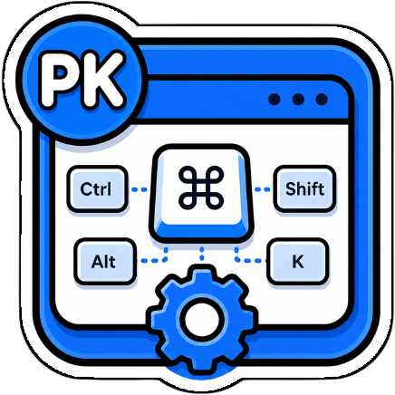

PK Chrome Shortcuts Chrome Extension
Cette page est la politique de confidentialité officielle de l'extension Chrome PK Chrome Shortcuts. This page is the official privacy policy for the PK Chrome Shortcuts Chrome extension. An English version is available below the French version.
PK Chrome Shortcuts ne collecte ni ne stocke de données personnelles sur les serveurs du développeur. Lorsque vous demandez explicitement une traduction, le texte sélectionné (1 500 caractères maximum) est transmis à Google Traduction. En cas d’échec ou si le mode MyMemory seul est choisi, le texte sélectionné est transmis à MyMemory (api.mymemory.translated.net). Ces services reçoivent le texte pour fournir la traduction et le traitent selon leurs propres politiques de confidentialité. Aucun autre contenu de la page n’est envoyé pour traduction.
Les données locales servent aux actions de raccourcis clavier demandées et à la gestion des onglets. Le texte sélectionné n’est transmis à Google Traduction ou MyMemory que lorsque vous utilisez la fonction de traduction.
Les actions d’onglets et de navigation sont traitées localement dans Chrome. Pour traduire, le texte sélectionné (1 500 caractères maximum) est envoyé au service externe : Google Traduction par défaut, avec MyMemory en secours, ou MyMemory seul selon le réglage. L’extension ne transmet pas l’historique, les champs de formulaire ni le reste du contenu des pages.
PK Chrome Shortcuts ne vend pas les données utilisateur. Le texte sélectionné est communiqué uniquement au fournisseur de traduction nécessaire pour répondre à votre demande (Google Traduction et/ou MyMemory), et n’est pas envoyé au développeur. Aucune donnée analytique ou publicitaire n’est collectée.
L'extension n'utilise pas de cookies, de pixels de suivi, d'outils analytiques ou de technologies publicitaires.
Les paramètres et préférences sont stockés localement dans le navigateur. Les données peuvent être supprimées à tout moment en désinstallant l'extension ou en effaçant les données de navigation de Chrome.
Les permissions déclarées servent uniquement à identifier les onglets, gérer les fenêtres, et fournir les fonctionnalités de raccourcis clavier pour la navigation et la gestion d'onglets.
Cette politique peut être mise à jour si les fonctionnalités de l'extension changent. La date de mise à jour sera modifiée sur cette page.
Pour toute question concernant cette politique de confidentialité, contactez : contact@mondary.design.
PK Chrome Shortcuts does not collect or store personal data on the developer’s servers. When you explicitly request a translation, the selected text (up to 1,500 characters) is sent to Google Translate. If that request fails, or if you choose MyMemory-only mode, the selected text is sent to MyMemory (api.mymemory.translated.net). These services receive the text to provide the translation and process it under their own privacy terms. No other page content is sent for translation.
Local data is used for requested keyboard shortcut actions and tab management. Selected text is sent to Google Translate or MyMemory only when you use the translation feature.
Tab and navigation actions are processed locally in Chrome. To translate, selected text (up to 1,500 characters) is sent to an external service: Google Translate by default, with MyMemory as fallback, or MyMemory alone depending on your setting. The extension does not send browsing history, form inputs, or the rest of webpage content.
PK Chrome Shortcuts does not sell user data. Selected text is shared only with the translation provider needed to fulfill your request (Google Translate and/or MyMemory); it is not sent to the developer. No analytics or advertising data is collected.
The extension does not use cookies, tracking pixels, analytics tools, or advertising technologies.
Settings and preferences are stored locally in the browser. Data can be deleted at any time by uninstalling the extension or clearing Chrome browsing data.
The declared permissions are used only to identify tabs, manage windows, and provide keyboard shortcut functionality for navigation and tab management.
This policy may be updated if the extension features change. The update date will be changed on this page.
For questions about this privacy policy, contact: contact@mondary.design.
© 2026 PK Chrome Shortcuts. All rights reserved.